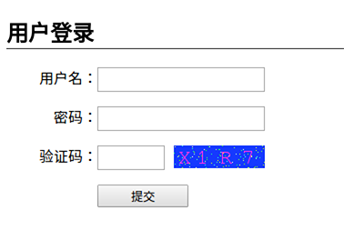
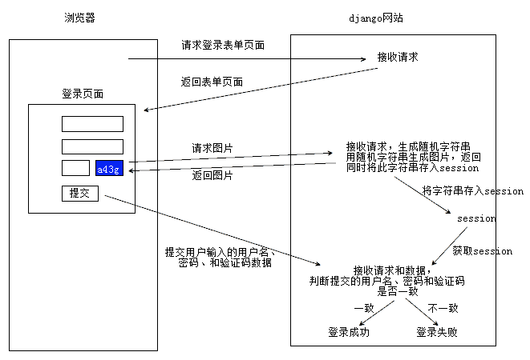

图形验证码
在用户注册、登录页面，为了防止暴力请求，可以加入图形验证码功能，如果验证码错误，则不需要继续处理，可以减轻业务服务器、数据库服务器的压力。
验证码应用效果

验证码工作原理

实现验证码示例
- 接下来的代码不要求手动写出来，按照实际需求使用网上找的或者公司已有的验证策略
- 需要安装包Pillow3.4.1
pip install Pillow==3.4.1
1、创建登录页视图
def login(request):
return render(request, 'booktest/login.html')
2、创建验证码视图(返回验证码图片)
- 点击查看PIL模块API，以下代码中用到了Image、ImageDraw、ImageFont对象及方法
- 提示1：随机生成字符串后存入session中，用于后续判断
- 提示2：视图返回mime-type为image/png
from PIL import Image, ImageDraw, ImageFont
from django.utils.six import BytesIO
def verify(request):
#引入随机函数模块
import random
#定义变量，用于画面的背景色、宽、高
bgcolor = (random.randrange(20, 100), random.randrange(
20, 100), 255)
width = 100
height = 25
#创建画面对象
im = Image.new('RGB', (width, height), bgcolor)
#创建画笔对象
draw = ImageDraw.Draw(im)
#调用画笔的point()函数绘制噪点
for i in range(0, 100):
xy = (random.randrange(0, width), random.randrange(0, height))
fill = (random.randrange(0, 255), 255, random.randrange(0, 255))
draw.point(xy, fill=fill)
#定义验证码的备选值
str1 = 'ABCD123EFGHIJK456LMNOPQRS789TUVWXYZ0'
#随机选取4个值作为验证码
rand_str = ''
for i in range(0, 4):
rand_str += str1[random.randrange(0, len(str1))]
#构造字体对象，ubuntu的字体路径为“/usr/share/fonts/truetype/freefont”
font = ImageFont.truetype('FreeMono.ttf', 23)
#构造字体颜色
fontcolor = (255, random.randrange(0, 255), random.randrange(0, 255))
#绘制4个字
draw.text((5, 2), rand_str[0], font=font, fill=fontcolor)
draw.text((25, 2), rand_str[1], font=font, fill=fontcolor)
draw.text((50, 2), rand_str[2], font=font, fill=fontcolor)
draw.text((75, 2), rand_str[3], font=font, fill=fontcolor)
#释放画笔
del draw
#存入session，用于做进一步验证
request.session['verifycode'] = rand_str
#内存文件操作
buf = BytesIO()
#将图片保存在内存中，文件类型为png
im.save(buf, 'png')
#将内存中的图片数据返回给客户端，MIME类型为图片png
return HttpResponse(buf.getvalue(), 'image/png')
3、创建登录验证视图
def login_check(request):
post = request.POST
name = post.get('username')
pwd = post.get('password')
# 获取用户输入的验证码
veri = post.get('verify')
# 从session读取已存的验证码
sess = request.session.get('verifycode')
# 比较用户名、密码、和验证码
if name == 'tom' and pwd == '123456' and veri == sess:
return HttpResponse('<h2>恭喜登陆成功！</h2>')
else:
return HttpResponse('<h2>登录失败！请重试！</h2>')
4、配置URL
url(r'^login$', views.login),
url(r'^verify$', views.verify),
url(r'^login_check$', views.login_check)
5、创建登录页面模板
<!DOCTYPE html>
<html lang="en">
<head>
<meta charset="UTF-8">
<title>Title</title>
<style>
p{overflow: hidden}input,img{float:left}h2{border-bottom:1px solid #333}
label{float: left;width:100px; line-height:25px; text-align:right;}
input{padding:0px;height:23px;text-indent:5px;width:180px;outline:none}
.verify_input{width:70px;margin-right:10px}
.sub_input{width:100px;height:25px;text-indent:0px;margin-left:100px}
</style>
</head>
<body>
<h2>用户登录</h2>
<form action="/login_check" method="post">
{% csrf_token %}
<p><label>用户名：</label><input type="text" name="username" autocomplete="off"></p>
<p><label>密码：</label><input type="password" name="password"></p>
<p><label>验证码：</label><input type="text" name="verify" class="verify_input">
<img src="/verify"></p>
<p><input type="submit" value="提交" class="sub_input"></p>
</form>
</body>
</html>